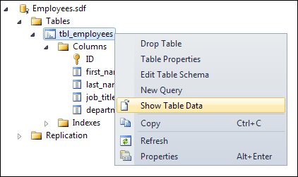
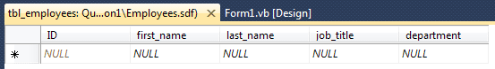
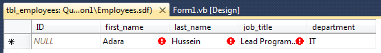
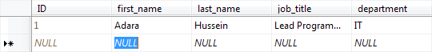
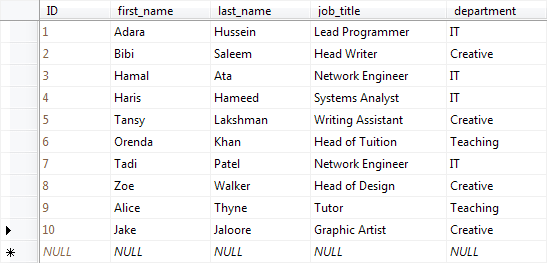

Adding Data to a SQL Server Database Table
To add entries to your SQL Server database, right click on your table name in the Database explorer. From the menu that appears, select Show Table Data:


All our Column names are there, waiting to be filled in. To enter data, simply click inside a cell and start typing.
Click inside the first_name column. (The ID Column will take care of itself.) Type a first name. Click inside of last_name and type a last name. Click inside of job_title and enter a job title. Then enter the department. You can enter the same details as ours, if you prefer (all made up):

Notice the warning symbols in the cells. These appear when the cell data has changed. The ID is still NULL in the image above. When we click in the next row, however, notice that a number will appear in the first ID cell (screenshot from Visual Studio 2012):

The reason it does this is because we set Is Identity to True, and the Identity Increment to 1 - it's an Auto Increment field, in other words.
But we have now created one row in our database table. Fill out a few more rows. You can use the same details as ours, in the image below:

Don't worry if your numbers for the ID column are not sequential (are not 1 to 10). If you make a mistake and delete a Row, you are given the next number after the deleted Row, and not the next number in your sequence.
Save your work, and you will have created your very first Compact SQL Server Express database! But it's a huge subject, and whole books have been written about SQL Server. We can only touch on the very basics here. What we do have, though, is a database we can open with C# .NET programming code. We'll do that next.